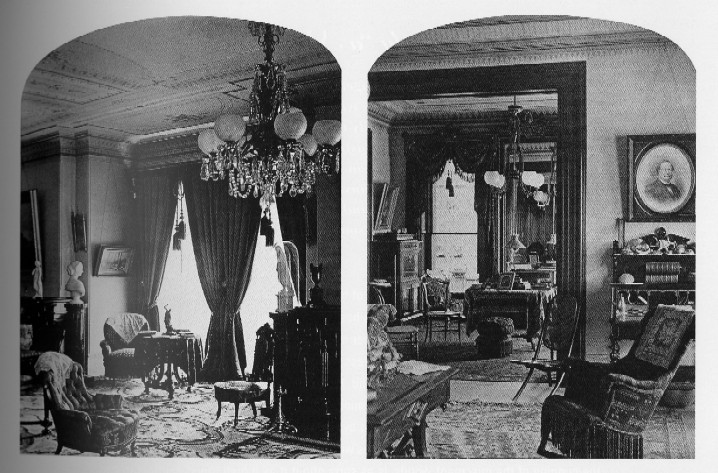

Inside the Langdon Home

picture
courtesy of Mark Twain
"Your letter brings you back to me, & I
see you
in
your dainty
room, among your books and pictures--I
see the south window & the hanging basket of flowers--& more
than all, I see
your precious little figure
bending over that fanciful portico." letter
to Olivia L. Langdon, 12.23.1868,
Lansing, MI, as quoted in
Mark
Twain's Letters, Vol. 2
back
to home exterior